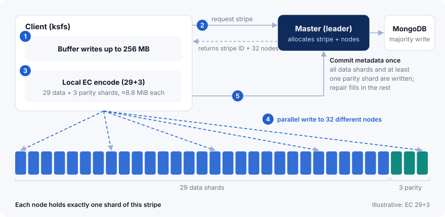
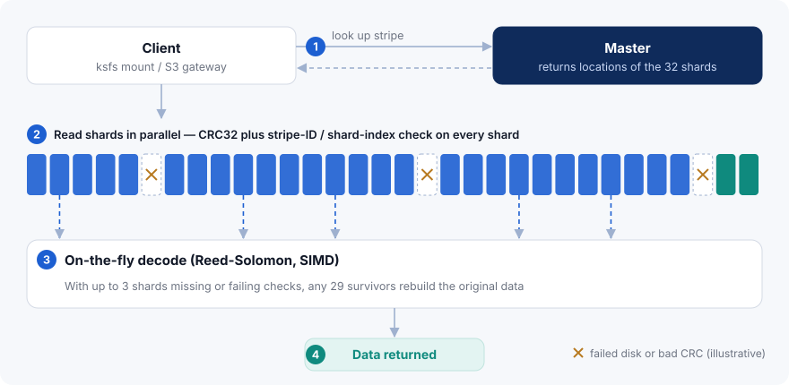
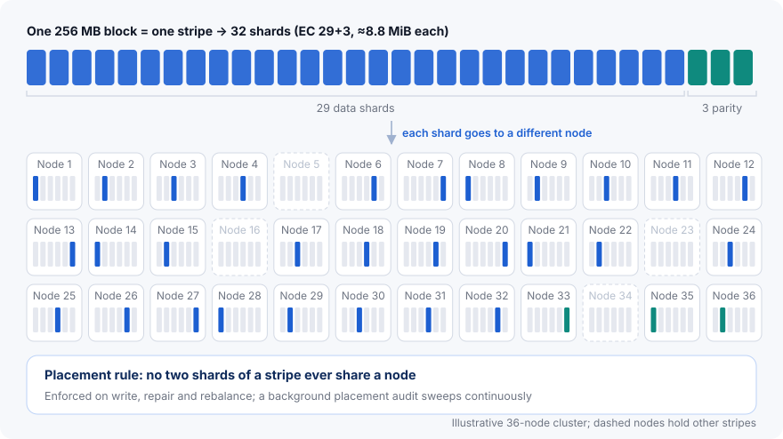
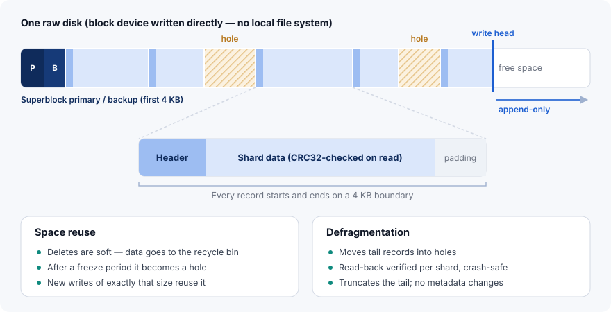
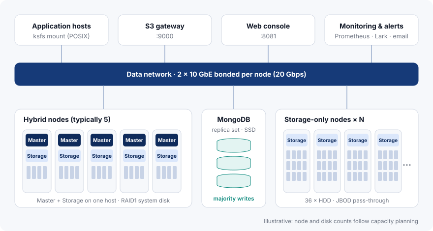

Architecture
KDSS keeps metadata and data apart. A Master cluster backed by a MongoDB replica set tracks where data lives; storage nodes own the raw disks and hold the data itself. Clients erasure-code locally and write shards to many nodes in parallel. Every shard is verified on read, and missing ones are rebuilt on the spot.
Three tiers, each scaling on its own
The access tier offers both POSIX and S3 entry points. The control tier handles metadata, leader election and background scheduling. The data tier is a pool of storage nodes that scales out to dozens of servers.

Swipe to see the full diagram
Metadata separate from data
The Master tracks stripe-level metadata only — one record per 256 MB of data — and never sits in the data path.
Encoding at the client
Clients erasure-code locally and write shards straight to storage nodes, spreading write traffic across the whole cluster.
No single point of failure
Multiple Masters with automatic leader election, majority writes to MongoDB, and shards spread across different nodes.
Components and ports
What each component does and the port it listens on by default. Open these in your firewall as needed.
| Component | Role | Default port |
|---|---|---|
| Master | Metadata and leader election; schedules repair, rebalancing, garbage collection and placement audits | gRPC 6700 metrics 6701 |
| Storage | Raw-disk I/O, node-side local reconstruction, disk health monitoring | gRPC 6800 metrics 6801 |
| Web console | Cluster, node and disk views; capacity panel; buckets and access keys; alerts; audit log; user management | 8081 |
| S3 gateway | S3-compatible API for AWS CLI, boto3, s3cmd, the Go SDK and similar tools | 9000 |
| MongoDB replica set | Holds the inodes, dentries, stripes, nodes and buckets collections; zstd compression, majority writes | Per your MongoDB deployment |
| ksfs client | FUSE mount with a POSIX interface; performs erasure coding on the client | — |
kdss_* namespace, and /metrics supports Bearer-token authentication. gRPC between components can optionally use mTLS; it can stay off on a trusted internal network.Buffer, encode, write in parallel, commit
Shown for a FUSE client with EC 29+3. Metadata is committed only after every shard has landed.

Swipe to see the full diagram
Buffer
The client buffers incoming writes until it has a full 256 MB block.
Request a stripe
It asks the Master leader for a stripe and receives a stripe ID and 32 target nodes.
Encode locally
Reed-Solomon (SIMD-accelerated) produces 29 data shards and 3 parity shards of about 8.8 MB each.
Write in parallel
All 32 shards go to 32 different nodes at once. Each storage node appends to its raw disk and persists according to the fsync policy.
Commit metadata
Once every shard is written, the client commits the stripe metadata to the Master, which writes it to a MongoDB majority.
Every shard verified, missing shards decoded on the fly
A shard is used only after it passes a CRC32 check and an identity check. A missing shard does not fail the read — the data is reconstructed from the others in real time.

Swipe to see the full diagram
Look up locations
The client asks the Master which node holds each shard of the stripe.
Read in parallel
All shards are read at once. Each is CRC32-checked and its stripe ID and shard index are verified, so a misrouted read can never return someone else's data. Streaming reads are verified the same way.
Decode what is missing
If shards are missing or fail verification, the rest are decoded in real time. With EC 29+3, any 29 shards are enough to return complete data.
Return data
The reconstructed data goes back to the application; the repair process rebuilds the missing shards on the storage side.
Stripes and placement: one stripe, 32 nodes
Each 256 MB block is one stripe. Large stripes keep metadata small — MongoDB stores stripe-level records only — and production clusters already manage more than 180 million stripes.

Swipe to see the full diagram
Placement rule
- Shards of a stripe never share a node, so losing any one node costs each stripe at most one shard.
- The rule is enforced on every write, repair and rebalance.
- A background placement audit sweeps the whole cluster continuously.
Repair
- Node-side reconstruction: the storage node pulls surviving shards, decodes locally and writes the result, avoiding an extra hop.
- Worst-first ordering by number of missing shards; repair tasks for hundreds of thousands of stripes are queued within minutes and claimed by multiple Masters.
- In-place repair: after a disk swap, data is written back to the same location on the new disk.
| Scheme | Min. nodes | Efficiency | Tolerates |
|---|---|---|---|
| EC 5+2 | 8 | 71.4% | 2 |
| EC 9+2 | 12 | 81.8% | 2 |
| EC 18+3 | 22 | 85.7% | 3 |
| EC 29+3 | 33 | 90.6% | 3 |
These schemes are selected automatically from the node count and are conservative defaults. Higher-density schemes such as 19+3, 21+3, 22+3, 31+3 and 31+2 are enabled manually. See capacity planning for details.
Raw-disk layout: no file system, append-only
Storage nodes bypass the local file system and write the block device directly. Sequential, 4 KB-aligned appends mean less head seeking, longer drive life and fewer failures.

Swipe to see the full diagram
Superblocks and disk identity
Primary and backup superblocks, CRC-protected. Each disk carries its node ID, disk ID and UUID, so moved slots or renamed devices are corrected at startup and a wrong disk is refused.
Records and verification
The local index is BadgerDB. Every read is CRC32-checked, streaming reads included; a background CRC scrub can be rate-limited (20 MB/s per node by default).
Crash recovery
Clean shutdowns restart in seconds. After a power loss, the index is completed by scanning forward from the write head; an interrupted compaction can rebuild the index from the whole disk. All disks open in parallel.
fsync policy
Choose immediate (default, every write persisted), batch (group commit) or deferred (for setups such as RAID controllers with BBU).
Space reuse and defragmentation
Deletes are soft: after the recycle bin and a freeze period, holes are reused by writes of exactly the same size. Defragmentation moves tail data into holes, verifies it, then truncates.
Three-level capacity protection
At the cluster reject line (99% by default) new writes stop but repair continues; a disk at its limit (99.5% by default) takes repairs only; a disk with under 4 GiB left becomes read-only.
Multiple Masters, upgrades without downtime
The control tier has no single point of failure: if any Master fails, leadership moves automatically. Storage nodes are upgraded one at a time while reads and writes continue.
Replicated Masters
A typical deployment runs 5 Masters, which elect a leader through the MongoDB replica set.
Majority writes
Metadata is acknowledged only after a majority of the MongoDB replica set has it.
Automatic failover
If the leader fails, another Master takes over without operator action.
Write redirection
Writes are redirected to the current leader automatically; applications never notice the switch.
Rolling upgrade
Enter maintenance
The node is cordoned and stops accepting new writes.
Drain in-flight writes
Writes already in progress are allowed to finish.
Replace and verify
Swap the binary, restart and confirm the node is healthy.
Exit maintenance, move on
One node at a time, fully transparent to applications.
Hybrid nodes plus storage-only nodes
Masters can share hosts with Storage on nodes whose system disk is RAID1; all other nodes run Storage only. Need more capacity? Add storage nodes.

Swipe to see the full diagram
| Item | Recommendation (from production) |
|---|---|
| Storage node | 36 × 16 TB enterprise HDDs (JBOD pass-through), 20-core-class Xeon CPU, 64 GB RAM |
| Network | 2 × 10 GbE bonded per node (20 Gbps) |
| System disk | RAID1; Masters run on nodes with a RAID1 system disk |
| Master | Typically 5, co-located with Storage |
| MongoDB replica set | On SSD |
| Minimum size | 8 nodes (EC 5+2) |
Want a deployment plan for your data center?
Tell us about your data volume, access patterns and hardware, and we will recommend node counts, an erasure-coding scheme and a network layout.